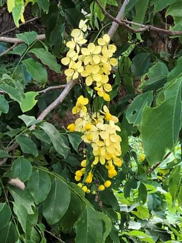

うるがいの話 ある日
最新:
教育テレビ
うるがいとは 前提知識です
カニの画像をクリックすると『うるがいの話』サイトを表示します

うるがい(ｳﾙｶﾞｲ urugai)とは、『もずくがに』の名前でとても大きくなります。

たながー（ﾀﾅｶﾞｰtanagaa）とは手長えびのことで、何種類かあり大きいのは車
エビぐらいになります。

ぶながー(bunagaa)とは、赤い髪の毛、赤い身体、そして身長は１ｍ２０ｃｍ
ぐらい、川の蟹を食べているの目撃された。場所は沖縄県国頭郡大宜味村のと
ある村僕の隣近所に住んでいる爺さんから、聞いた話です。
2021年07月08日 (木）教育テレビ
17:11

ヨメのお母さんが２回目のワクチン接種を受けた。送り迎えの合間、Ｅテレを
みる。「科学と人間生活」では『分子料理』という料理方法（科学的な知識を
生かした調理法）が紹介されていた。おととい見た映画『シェフ！ ～三ツ星
レストランの舞台裏へようこそ』で三ツ星の審査で、審査員が『分子料理』に
興味があるとの事から、ショフ達が日本の殿様と姫に扮装しとあるレストラン
に偵察に行くシーンがあった。そのとき料理方法はイミクジピーマンだったが
教育番組を見てガッテン！（でも食べたいとは思わないが）。まだ、迎えに来
いの連絡が無い。次の番組「芸術／美術Ⅰ（風景）」をみる。とある高校で（
おそらく）美術部の女性徒３名が、テーマを与えられ「風景」をスケッチして
いく。私も一応美術部だが、彼女たちのデッサンはうまい！。どれどれ、とテ
レビを見ていたが、接種が終わったので病院へ迎えに来て！と連絡がきた。た
めになる教育番組だった。